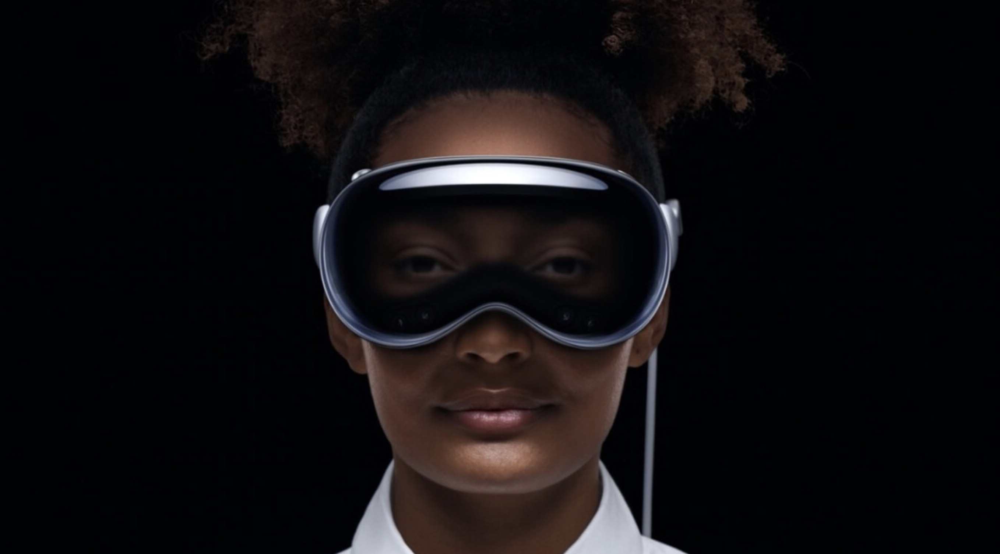

Revolución en la interacción persona-ordenador
El Apple Vision Pro es un dispositivo de realidad mixta (AR/VR) lanzado en 2024 por Apple, diseñado para transformar la manera en la que interactuamos con el mundo digital. Con una pantalla micro-OLED y controles a través de gestos, ojos y voz, permite una experiencia inmersiva única, integrando de manera fluida aplicaciones y contenido en el entorno físico.
El Apple Vision Pro aporta varios beneficios a la interacción persona-ordenador. A diferencia de los dispositivos tradicionales, este permite una experiencia natural y envolvente sin la necesidad de dispositivos periféricos, como ratones o teclados. Se controla con los ojos, las manos y la voz, lo que facilita el acceso a tareas complejas, como el diseño en 3D, la colaboración en realidad aumentada y la interacción inmersiva.
El Apple Vision Pro sustituye y mejora la funcionalidad de dispositivos anteriores como cascos de realidad virtual tradicionales (Oculus, HTC Vive) y controladores físicos. Anteriormente, la interacción con la realidad virtual se limitaba a mandos o interfaces complejas, pero el Vision Pro simplifica este proceso con su control por gestos y seguimiento ocular, proporcionando una experiencia más intuitiva y natural. Además, integra la realidad aumentada con una calidad visual inigualable gracias a su pantalla micro-OLED.